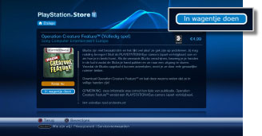
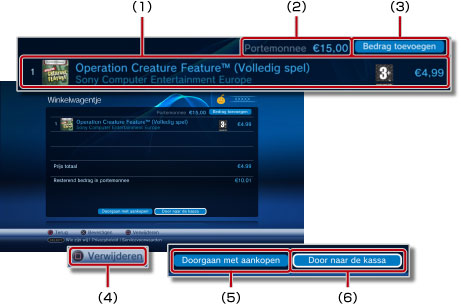
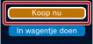
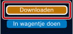
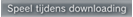

PlayStation®Network > Producten downloaden (kopen)
Producten downloaden (kopen)
Om deze functie te gebruiken, zult u mogelijk uw systeemsoftware moeten updaten.
U kunt producten, zoals spelletjes, bijkomende items voor spelletjes of videocontent downloaden (betalend of gratis) die beschikbaar zijn in  (PlayStation®Store). Om producten te downloaden (betalend of gratis) van (PlayStation®Store), moet u een PlayStation®Network-account aanmaken.
(PlayStation®Store). Om producten te downloaden (betalend of gratis) van (PlayStation®Store), moet u een PlayStation®Network-account aanmaken.
1. |
Selecteer |
||||||||||||
|---|---|---|---|---|---|---|---|---|---|---|---|---|---|
2. |
Selecteer het item dat u wilt downloaden (betalend of gratis) uit |
||||||||||||
3. |
Selecteer [In wagentje doen].  |
||||||||||||
4. |
Selecteer [Wagentje weergeven] om het volgende scherm weer te geven. 
|
||||||||||||
5. |
Selecteer [Door naar de kassa]. |
||||||||||||
6. |
Selecteer [Aankoop bevestigen]. |
||||||||||||
7. |
Selecteer het item dat uw wilt downloaden. |
Opmerkingen
- De producten die beschikbaar zijn in (PlayStation®Store) zijn afhankelijk van het land of de regio. U hebt alleen toegang tot de (PlayStation®Store) van het land of de regio van uw PlayStation®Network-account.
- Surf naar de SCE-website voor uw regio voor meer informatie over de soorten producten die (betalend of gratis) kunnen worden gedownload uit (PlayStation®Store) en over de diensten na verkoop.
- Als u [Koop nu] selecteert in stap 3 voor een item dat u wilt aankopen, dan kunt u de pagina met het winkelwagentje overslaan en meteen naar het scherm met de bevestiging van uw aankoop gaan (stap 6). Indien er creditcardgegevens opgeslagen zijn voor uw PlayStation®Network-account, dan worden er automatisch fondsen toegevoegd als de portemonnee niet over voldoende fondsen beschikt om de de aankoop te doen.

- Als u [Downloaden] selecteert voor een gratis item (stap 3), dan slaat u de pagina met winkelwagentje over en gaat u meteen naar het downloadscherm (stap 7).

- Als de aanmeld-ID (e-mailadres) niet correct is (of geen geldig e-mailadres is), zult u geen bevestigingsbericht ontvangen. Gebruik een geldig e-mailadres om berichten te ontvangen als u uw aanmeldings-ID registreert. Om uw aanmeldings-ID te wijzigen, ga naar
 (PlayStation®Network) en selecteer
(PlayStation®Network) en selecteer  (Accountbeheer) >
(Accountbeheer) >  (Accountgegevens) > [Aanmeldings-ID (e-mailadres)]. Volg de instructies op het scherm om aanpassingen te maken.
(Accountgegevens) > [Aanmeldings-ID (e-mailadres)]. Volg de instructies op het scherm om aanpassingen te maken. - Bepaalde inhoud die gedownload (gekocht) werd van (PlayStation®Store) kan enkel gebruikt worden door apparaten die door een PS3™-systeem geactiveerd worden, zoals een ander PS3™-systeem of een PSP™-systeem. Om een apparaat te activeren of te deactiveren, selecteert u (Accountbeheer) onder (PlayStation®Network) en selecteert u vervolgens
 (Systeemactivatie). Volg de instructies op het scherm om de transactie af te ronden.
(Systeemactivatie). Volg de instructies op het scherm om de transactie af te ronden. - Als op het scherm wordt weergegeven tijdens een download, dan kunt u andere handelingen uitvoeren tijdens het downloaden. Selecteer om terug te keren naar het vorige scherm terwijl u verder downloadt. Raadpleeg voor meer informatie
 (Netwerk) >
(Netwerk) >  (Downloadbeheer) > [Downloaden in de achtergrond] in deze gids.
(Downloadbeheer) > [Downloaden in de achtergrond] in deze gids. - Als

wordt weergegeven op het scherm tijdens een downloadactiviteit, kan de video worden afgespeeld terwijl hij wordt gedownload. Als u selecteert, wordt (PlayStation®Store) gesloten en begint de videoweergave.